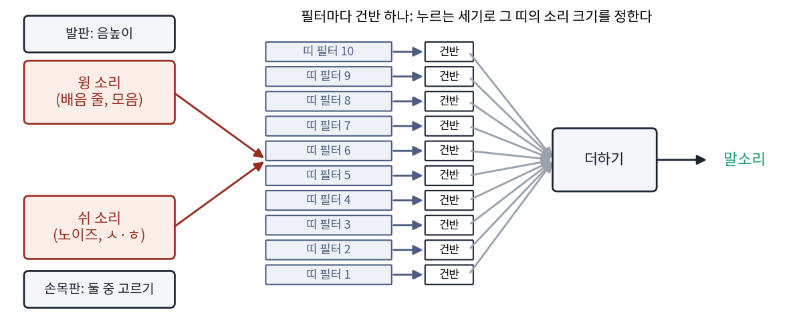
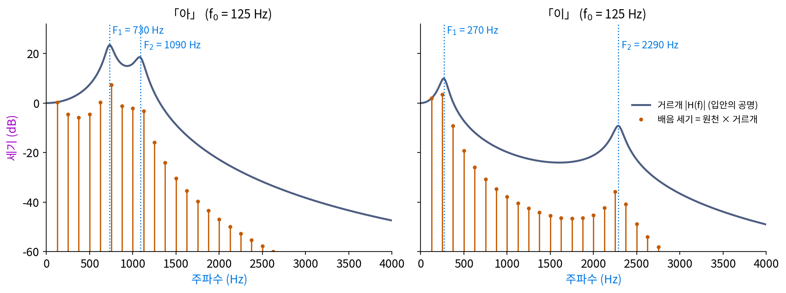

포먼트: 모음은 봉우리 자리로 갈린다
같은 사람이 같은 높이 125 Hz로 「아」와 「이」를 낸다. 성대는 똑같이 1초에 125번 열렸다 닫히므로 배음 줄의 간격도 125 Hz로 같다. 그런데 우리는 둘을 한 번에 가르니, 줄의 자리가 같다면 다른 것은 줄마다의 세기 ak일 것이다. 성대에서 나온 같은 원천이 입 밖으로 나오기 전에 무엇을 거쳐 세기가 달라졌을까? 「아」를 할 때는 입을 크게 벌리고 혀를 내리고, 「이」를 할 때는 입을 옆으로 벌리고 혀를 앞쪽 위로 올린다. 바뀌는 것은 성대 위의 빈 공간, 입안과 목 안의 모양이다.
역사: 모음 다섯 개를 소리 나는 관으로
1780년을 기한으로 내건 상트페테르부르크 학술원의 현상 문제는 모음 a, e, i, o, u 가 어떻게 다른지 설명하고, 그 소리를 내는 장치를 만들라는 것이었다. 의사이자 물리학자인 크라첸슈타인(Christian Gottlieb Kratzenstein)은 먼저 사람 입을 쟀다. 얇은 나무 조각을 이 사이나 입술 사이에 세워 끼우고 입을 얼마나 벌려야 각 모음이 제대로 나오는지 보았다. 그는 이 값들이 정확하지 않고, 여러 곳을 한꺼번에 볼 수도 없다고 스스로 밝혔다. 그래서 입 모양을 그대로 본뜨는 대신, 모양을 바꿔 가며 소리를 들어 보는 실험을 거듭해 관 다섯 개의 모양을 정했다. 넷은 떨판(바람이 지나가며 떨리는 얇은 판)이 낸 같은 소리를 각기 다른 모양의 관으로 울렸고, 「i」 관만은 떨판 없이 입김을 불어 소리를 냈다. 그는 상을 받았고, 그 논문은 1781년에 인쇄되었다. 같은 원천을 모양이 다른 빈 공간에 통과시키면 다른 모음이 된다는 생각이 실물로 나온 것이다.
160년쯤 뒤, 이 생각은 전기 회로가 되었다. 미국 벨 전화 연구소의 더들리(Homer Dudley)가 만든 보더(Voder)는 1939년 뉴욕 세계 박람회에서 사람들 앞에서 말을 했다. 조작자는 손목판으로 두 원천, 모음을 위한 윙 소리(배음 줄)와 ㅅ 같은 소리를 위한 쉬 소리(노이즈) 가운데 하나를 고르고, 발판으로 음높이를 바꾸고, 건반으로 띠 필터 10개 각각의 소리 크기를 정했다. 원천과 공명을 완전히 떼어 낸 구조였지만, 알아들을 만한 말을 치려면 조작자가 몇 달을 연습해야 했다. 건반 하나로 고르는 띠가 무엇이어야 하는지는 조작자의 손이 익혀야 했던 것이다.

같은 원천에 봉우리 두 개를 씌우면
입안을 가장 단순하게 흉내 내면, 특정 주파수 근처의 물결을 크게 키우는 공명 봉우리 두 개다. 성대의 원천을 이 필터(어떤 주파수는 남기고 어떤 주파수는 줄이는 연산, filter)에 통과시키면, k번째 배음의 세기는 원천의 세기에 그 주파수에서의 필터 배율을 곱한 값이 된다. 「아」와 「이」의 봉우리 자리는 피터슨(Gordon E. Peterson)과 바니(Harold L. Barney)가 1952년에 잰 미국 영어 남성 평균에서, 「아」에 가까운 모음은 730 Hz와 1090 Hz, 「이」에 가까운 모음은 270 Hz와 2290 Hz를 빌렸다. 한국어의 「아」·「이」를 잰 값이 아니고, 봉우리의 폭(90 Hz, 110 Hz)은 설명을 위해 고른 값이다.
125 Hz 원천에 씌우면 결과가 크게 갈린다. 「아」는 730 Hz 봉우리에 가장 가까운 6번째 배음(750 Hz)이 가장 세고, 1090 Hz 봉우리 근처의 9번째 배음(1125 Hz)이 그 다음 언덕을 이룬다. 「이」는 2번째 배음(250 Hz)이 가장 세고, 18번째 배음(2250 Hz)이 이웃(2125 Hz, 2375 Hz)보다 6.5 dB와 5.0 dB 높이 솟는다. 같은 750 Hz에서 「아」가 「이」보다 34.2 dB 세고, 같은 2250 Hz에서는 「이」가 「아」보다 20.9 dB 세다. 배음 줄의 자리는 똑같고, 줄 끝을 이은 윤곽의 봉우리 자리가 다르다.
데시벨로 적으면 곱셈이 덧셈이 되어, 원천의 기울기(옥타브마다 −6 dB)에 필터의 봉우리 모양이 더해진다. 성대는 음높이 f₀를 정하고, 입안은 봉우리 F₁, F₂를 정한다. 두 일을 서로 다른 기관이 맡으니, 같은 모음을 다른 높이로 부를 수도 있고 같은 높이로 다른 모음을 낼 수도 있다. 이처럼 소리를 원천과 필터의 곱으로 보는 틀을 원천–필터 모델이라 하고, 필터 H의 봉우리를 포먼트 (입안 공명의 봉우리 / formant)라 한다. 낮은 쪽부터 F₁, F₂, … 로 부른다. 입을 크게 벌리면 F₁이 오르고, 혀를 앞으로 내밀면 F₂가 오른다고 흔히 정리한다. 「아」(730 Hz, 1090 Hz)는 입을 크게 벌리고 혀를 뒤로 둔 끝, 「이」(270 Hz, 2290 Hz)는 입을 좁히고 혀를 앞으로 낸 끝이다.

ML에서: 원천과 필터를 신경망의 층으로
신경망이 소리를 만들 때 원천–필터 모델을 그대로 층으로 쓰는 방법이 있다. 구글의 엥겔(Jesse Engel)과 동료들이 ICLR 2020 에 낸 DDSP(미분할 수 있는 디지털 신호 처리)는 신경망이 파형의 칸 하나하나를 내놓는 대신, 시간마다 기본 주파수 f₀, 배음들의 세기, 노이즈를 걸러 낼 필터의 모양을 내놓게 했다. 그 값으로 정수배 물결을 더하는 합성기와 거른 노이즈를 만드는 합성기를 돌려 소리를 만들고, 합성기 전체를 미분할 수 있게 짜서 오차를 거꾸로 흘려 학습한다. 배음과 필터라는 구조를 신경망에 미리 넣어 두었으므로, 학습이 끝난 모델의 음높이나 음색을 따로 손댈 수도 있다.
음성 인식에서는 거꾸로 같은 녹음을 조금 빠르게, 또는 조금 느리게 재생해 학습 데이터를 늘리는 방법을 쓴다. 재생 속도를 바꾸면 원천과 필터 가운데 무엇이 바뀌고, 그 녹음이 「다른 사람의 목소리」를 흉내 내는지는 아래 문제 6에서 따진다.
문제 4. 헬륨 풍선을 마시면
헬륨을 마시고 말하면 목소리가 오리처럼 바뀐다. 성대는 그대로 떨리므로 기본 주파수는 그대로 125 Hz 라고 하자. 입안의 공명 봉우리는 관 속 소리의 속력(음속)에 비례하는데, 헬륨과 공기가 섞인 입안에서 소리가 1.5배 빠르다고 가정한다. (가) 「아」와 「이」의 F₁, F₂ 는 어디로 가는가? (나) 봉우리에 가장 가까운 배음은 몇 번째에서 몇 번째로 바뀌는가? (다) 「목소리가 높아졌다」는 느낌은 무엇이 올라서 생기는가? (위젯 2의 「문제 4」 단추로 들어 보자.)

(가)는 다 1.5배니까 「아」는 1095 Hz와 1635 Hz, 「이」는 405 Hz와 3435 Hz예요. 그럼 음높이도 1.5배인 187.5 Hz로 올라가는 거죠? 높게 들리니까요.

문제에서 성대는 어떻다고 했죠? 위젯에서 기본 주파수 숫자를 봐요.

f₀ 는 바뀌지 않고 125 Hz예요. 배음 줄 간격도 125 Hz로 같고요. 그런데 들어 보면 확실히 높아진 느낌인데….

(나)를 보면 알겠어. 「아」의 F₁ 봉우리에 가장 가까운 배음이 6번째에서 9번째(1125 Hz)로, F₂ 쪽은 9번째에서 13번째(1625 Hz)로 올라갔어. 「이」는 F₁ 쪽이 2번째에서 3번째(375 Hz), F₂ 쪽이 18번째에서 27번째(3375 Hz)로. 줄은 그대로인데 센 줄이 위로 옮겨 갔어.

그래요. 줄 간격, 그러니까 음높이는 그대로인데 세기의 무게중심이 위로 올라가서 「밝고 높은」 음색이 된 거예요. 사람들은 이걸 흔히 「목소리가 높아졌다」고 말해요.

단체 사진에서 사람 자리는 그대로 두고 조명만 위쪽으로 옮긴 거네요. 얼굴 위치는 같은데 사진 느낌이 완전히 달라지는 거요.
문제 5. 소프라노의 가사는 왜 알아듣기 어려울까
「같은 높이」를 125 Hz 에서 점점 올려 880 Hz(높은 「라」)로 「아」와 「이」를 부른다. 봉우리 F₁ 의 자리를 「1500 Hz 아래에서 가장 센 배음」으로 어림한다. (가) f₀ 가 125, 220, 440, 880 Hz 일 때 「아」와 「이」의 어림값은 각각 얼마인가? (나) 880 Hz 에서 두 모음의 첫째·둘째 배음 세기는 얼마인가? 두 모음을 아직 가를 수 있는 단서가 남는가? (다) 배음이 필터의 윤곽을 「샘플링」한다고 보면, 샘플 간격은 얼마이고 무엇이 모자라는가? (위젯 2의 「문제 5」 단추로 두 모음을 번갈아 들어 보자.)
(가)는 125 Hz면 「아」 750 Hz, 「이」 250 Hz로 참값 730, 270에 가까워. 220 Hz면 660과 220, 440 Hz면 880과 440, 880 Hz면 둘 다 880 Hz야. 음높이를 높이면 어림이 망가지는 게 아니라 첫째 배음 자리에 붙어 버리네.
「이」의 F₁ 은 270 Hz예요. 880 Hz로 부르면 270 Hz 근처에 배음이 하나라도 있나요?

없어요. 가장 낮은 배음이 880 Hz니까 그 아래 봉우리는 아예 들을 수가 없어요. 봉우리가 있어도 봉우리 주파수에 배음 줄이 서지 않으면 안 보여요.
(나)는 880 Hz에서 「아」가 15.6 dB, 「이」가 −17.9 dB이고, 1760 Hz에서는 −23.1 dB와 −29.7 dB예요. 첫째 배음 세기가 33 dB 넘게 차이 나니까 이걸로는 아직 가를 수 있겠네요.

첫째 배음의 세기 차이는 봉우리 자리를 알려 주나요, 세기를 알려 주나요? 「아」의 F₁ 이 730 Hz가 아니라 1000 Hz였어도 880 Hz 줄의 세기는 비슷하게 셀 거예요.

세기만 알려 줘요. 봉우리가 줄 왼쪽에 있는지 오른쪽에 있는지는 줄 하나로는 못 가르겠네요. 노래하는 사람이 소리 크기를 바꾸면 그 단서도 흐려지고요.

(다)는 필터 윤곽을 주파수 축에서 f₀ 간격으로 찍은 거니까, 샘플 간격이 880 Hz야. 봉우리 사이가 그보다 좁거나 봉우리가 첫 샘플보다 아래 있으면 윤곽을 되살릴 수 없어. 「같은 높이로」라는 조건에 「낮은 높이로」가 숨어 있었던 거야. 125 Hz 간격으로 찍을 때만 봉우리 자리가 또렷했던 거고.
그래요. 높은 소리로 부른 노래의 가사가 왜 잘 안 들리는지 말할 때 흔히 이 샘플 간격을 들어요.

샘플링 정리에서 칸이 성기면 빠른 물결을 못 담던 거랑 같은 이야기를, 시간 축 대신 주파수 축에서 한 거네.
문제 6. 녹음 재생 속도를 1.1배로
음성 인식 모델을 학습할 때 같은 녹음을 0.9배, 1.0배, 1.1배 속도로 재생한 세 벌을 쓰는 방법이 있다. 고(Tom Ko)와 동료들(2015)은 이 방법으로 네 태스크(음성 인식 데이터 묶음)에서 단어 오류율이 평균 4.3% 줄었다고 보고했다. 125 Hz 「아」(F₁ 730 Hz, F₂ 1090 Hz)에 대해 (가) 1.1배 속도로 재생하면 f₀, F₁, F₂, 길이는 어떻게 되는가? (나) 「음높이만 1.1배」와 「봉우리만 1.1배」로 바꾼 소리와 함께, 1000 Hz 아래에서 가장 센 배음이 몇 번째인지 적어라. (다) 재생 속도를 바꾼 소리는 어떤 사람의 목소리처럼 들릴까? (위젯 2의 「문제 6」 단추와 슬라이더로 셋을 만들어 견줘 보자.)
(가)는 다 1.1배요. f₀ 137.5 Hz, F₁ 803 Hz, F₂ 1199 Hz, 길이는 1/1.1 = 0.909배로 짧아지고요. (나)는 재생 속도 1.1배면 6번째(825 Hz), 음높이만 올리면 5번째(687.5 Hz), 봉우리만 올리면 6번째(750 Hz)예요. 재생 속도를 바꾼 소리가 원래랑 같은 6번째네요. 그럼 소리가 거의 안 바뀐 거 아니에요?
원래 소리와 재생 속도 1.1배 소리에서 F₁ ÷ f₀ 를 구해 봐요.
둘 다 5.84예요. 주파수를 모두 같은 배수로 늘리면 비율은 그대로라서, 배음 번호로 보면 모양이 똑같아요. 그런데 Hz로 보면 줄도 봉우리도 다 옮겨 갔으니 소리는 바뀐 거죠. 비율만 같아요.
(다)는 성대도 10% 빨리 떨고 입안 공명도 10% 높은, 그러니까 성대가 조금 가볍고 입안이 조금 짧은 사람이야. 어른과 아이처럼 몸집이 다른 사람들은 대체로 그렇게 다르니까 그럴듯한 「다른 사람」이 돼.
음높이만 바꾼 소리와 봉우리만 바꾼 소리는 어떤가요?
음높이만 올리면 같은 입안으로 더 높이 부른 같은 사람이고, 봉우리만 올리면 같은 높이로 입 모양을 바꾼 거라서 자칫 다른 모음에 가까워질 수도 있어요. 재생 속도 1.1배는 원천과 필터를 함께 옮기니까 모음은 지키면서 사람만 바꾸는 방법이에요.
그래요. 모델이 배워야 할 것은 「어떤 모음인가」이고 「누구 목소리인가」는 흔들려도 되는 것이에요. 두 가지를 원천과 필터로 떼어 보면, 데이터를 늘릴 때 무엇을 흔들어야 하는지가 보여요.

손글씨 숫자 데이터를 늘릴 때 살짝 돌리고 키우기는 해도, 6을 뒤집어 9가 될 만큼은 안 돌리잖아요. 라벨(모음)은 지키고 겉모습(사람)만 바꾼다는 점이 같네요.